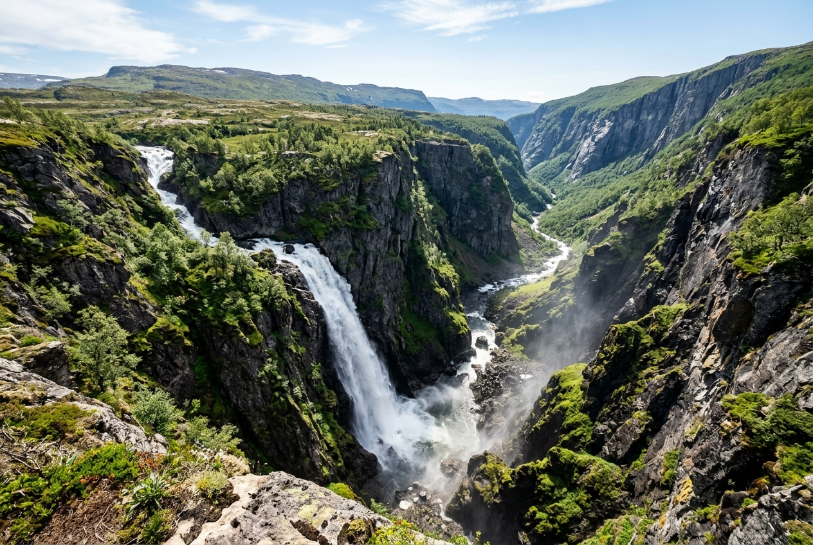
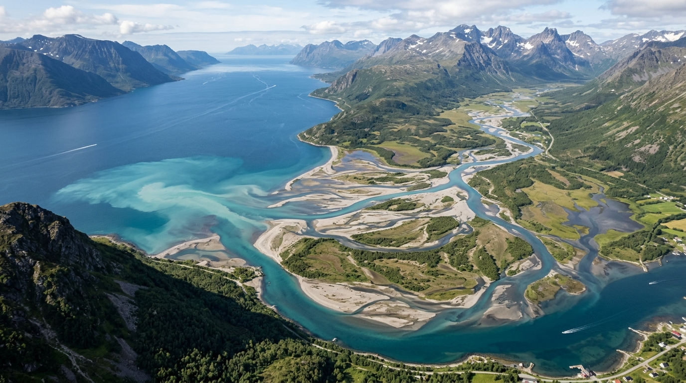

Landformer som er dannet av elver
Rennende vann produserer både erosjonsformer i høyereliggende områder og avsetningsformer der terrenget flater ut, i en innsjø eller i havet.

Elver har formet Norge i mer enn 50 millioner år. For om lag 55 millioner år siden begynte Grønland og den skandinaviske halvøya å bevege seg fra hverandre. Ny havbunn ble dannet, og Norskehavet åpnet seg. Et bredere hav i vest ga fuktigere klima og større vannføring i elvene, samtidig som fjellene i Sør- og Nord-Norge hevet seg 1000–1500 meter. Større fall fra fjell til kyst ga elvene større evne til å erodere seg ned i de gamle dalene.
Seinere, under istidene som startet for 2,6 millioner år siden, utvidet breene de lange elvedalene på Vestlandet og i Nord-Norge og gravde dem dypere ned i berggrunnen. Etter at breene smeltet bort og havet trengte innover, ble dalbunnene til fjorder. Slike landformer dannet etter landhevingen i paleogen/neogen og under istidene i kvartær kalles .
Rennende vann eroderer og transporterer løsmasser
Elvene eroderer bare der vannstrømmen går. Der elva renner over fast fjell, kan hoppende stein i strømmen slå løs stykker av elvebunnen. Når vannføringen øker under snøsmelting eller kraftig nedbør, øker også turbulensen (strømvirvlene) og strømhastigheten – og dermed øker elvas transportevne.
1. Slamtransport
skjer når små jordpartikler (grums) holdes svevende av strømvirvlene, typisk under vårflommen i leirjordsområder som Østlandet og Trøndelag.
2. Bunntransport
av stein og grus skjer langs elvebunnen når det er kraftig strøm i elva.
3. Oppløst materiale
Vannet løser opp mineraler gjennom kjemisk forvitring, og det oppløste materialet følger vannstrømmen.
Elvas erosjonsformer
V-dal
Der terrenget skråner, øker farten og elva graver ut en som likner et øksehugg i fjellsiden. Jord og stein raser ned fra sidene etter hvert som elva graver seg ned, og dalbunnen er ikke bredere enn selve elva.
Canyon
Renner elva over knauser av hardt berg, foregår erosjonen bare i elvebunnen. Sidene er så harde at det ikke raser materiale ned, og veggene blir loddrette – en eller et elvegjel.
Jettegryte
Spesielle strømvirvler kan få steiner til å rotere på et avgrenset område, slik at de graver ut runde i bunnen av elveløpet. Et kjent lokalt eksempel i Telemark er Jettegrytene i Nissedal (langs Fyresåna), som ble avdekket da elva ble regulert på 1950-tallet.

Elvevifte og skadeflom i Kvam
Der dalsiden begynner å flate ut, reduseres vannets fart og transportevne. Over lang tid bygges stein, grus og sand opp som en – smal øverst og bred nederst – fordi elva breier seg ut i et forgreinet løp. Når ett løp fylles opp med løsmasser under flom, blir det stengt, og vannet finner et nytt løp ved siden av.
Eksempel – Kvam i Gudbrandsdalen: Tettstedet Kvam ligger på en elvevifte der en sideelv munner ut i Gudbrandsdalslågen. I både 2011 og 2013 opplevde innbyggerne skadeflom da kraftig nedbør førte flomvann med stein og grus innover bebyggelsen.
Meanderløp, elveslette og kroksjø
Hvis det er mye løsmasser der dalbunnen er bred og flat, får hovedelva et svingete . I yttersvingene har vannet størst fart og eroderer seg inn i terrenget. I innersvingene bremses farten opp, og elva avsetter sandbanker. Over tid flytter elveløpet seg fram og tilbake og danner en flat .
Elvesletter med sand og grus har vært mye lettere å dyrke opp enn steinete , og er attraktive for veier, næringsbygg og bebyggelse – men også flomutsatt (som ved Frya i Sør-Fron under flommen i Gudbrandsdalen i 2013, der selv flyplassen sto under vann).
Når yttersvingene kryper nærmere hverandre, kan elva ved stor flom skjære rett gjennom meanderbuen. Meandersvingen blir liggende igjen uten innløp og utløp som en , som gradvis gror igjen med frodig vegetasjon og yrende dyreliv.

Delta

Et er en avsetning av sorterte løsmasser ved munningen av en elv (oppkalt etter den greske bokstaven $\Delta$). Når elva kommer ut i vann eller hav, bremses farten: Sand og småstein avsettes først (toppavsetninger innerst og finere frontavsetninger i deltaskråningen), mens finkornet leire virvler videre og synker til bunns lengst ute (bunnavsetninger). Ved utløpet av Amazonas kan ferskvann og slam registreres hele 300 km ut i Atlanterhavet.
Ordliste
Lisens: Alle fotografiske illustrasjoner og geologiske figurer i Images/ er egenproduserte for dette undervisningsopplegget under åpen lisens (CC0 1.0 / CC BY 4.0).